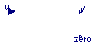
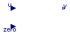
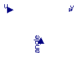

| Name | Description |
|---|---|
| ToSpacePhasor | Conversion: three phase -> space phasor |
| FromSpacePhasor | Conversion: space phasor -> three phase |
| Rotates space phasor | |
| Converts a space phasor to polar coordinates | |
| FromPolar | Converts a space phasor from polar coordinates |

| Type | Name | Default | Description |
|---|---|---|---|
| Integer | nin | m | Number of inputs |
| Integer | nout | 2 | Number of outputs |
| Type | Name | Description |
|---|---|---|
| input RealInput | u[nin] | Connector of Real input signals |
| output RealOutput | y[nout] | Connector of Real output signals |
| output RealOutput | zero |
block ToSpacePhasor "Conversion: three phase -> space phasor"
extends Modelica.Blocks.Interfaces.MIMO(final nin=m, final nout=2);
constant Integer m=3 "number of phases";
constant Real pi=Modelica.Constants.pi;
protected
parameter Real TransformationMatrix[ 2, m]=2/m*
{{cos(+(k - 1)/m*2*pi) for k in 1:m}, {+sin(+(k - 1)/m*2*pi) for k in 1:m}};
parameter Real InverseTransformation[m, 2]=
{{cos(-(k - 1)/m*2*pi), -sin(-(k - 1)/m*2*pi)} for k in 1:m};
public
Modelica.Blocks.Interfaces.RealOutput zero;
equation
zero = 1/m*sum(u);
y = TransformationMatrix *u;
//u = fill(zero,m) + InverseTransformation*y;
end ToSpacePhasor;

| Type | Name | Default | Description |
|---|---|---|---|
| Integer | nin | 2 | Number of inputs |
| Integer | nout | m | Number of outputs |
| Type | Name | Description |
|---|---|---|
| input RealInput | u[nin] | Connector of Real input signals |
| output RealOutput | y[nout] | Connector of Real output signals |
| input RealInput | zero |
block FromSpacePhasor "Conversion: space phasor -> three phase"
extends Modelica.Blocks.Interfaces.MIMO(final nin=2, final nout=m);
constant Integer m=3 "number of phases";
constant Real pi=Modelica.Constants.pi;
protected
parameter Real TransformationMatrix[ 2, m]=2/m*
{{cos(+(k - 1)/m*2*pi) for k in 1:m}, {+sin(+(k - 1)/m*2*pi) for k in 1:m}};
parameter Real InverseTransformation[m, 2]=
{{cos(-(k - 1)/m*2*pi), -sin(-(k - 1)/m*2*pi)} for k in 1:m};
public
Modelica.Blocks.Interfaces.RealInput zero;
equation
y = fill(zero,m) + InverseTransformation*u;
//zero = 1/m*sum(y);
//u = TransformationMatrix *y;
end FromSpacePhasor;

| Type | Name | Default | Description |
|---|---|---|---|
| Integer | n | 2 | Number of inputs (= number of outputs) |
| Type | Name | Description |
|---|---|---|
| input RealInput | u[n] | Connector of Real input signals |
| output RealOutput | y[n] | Connector of Real output signals |
| input RealInput | angle |
block Rotator "Rotates space phasor"
extends Modelica.Blocks.Interfaces.MIMOs(final n=2);
protected
Real RotationMatrix[2,2] = {{+cos(-angle),-sin(-angle)},{+sin(-angle),+cos(-angle)}};
//Real InverseRotator[2,2] = {{+cos(+angle),-sin(+angle)},{+sin(+angle),+cos(+angle)}};
public
Modelica.Blocks.Interfaces.RealInput angle;
equation
y = RotationMatrix*u;
//u = InverseRotator*y;
end Rotator;
 Modelica.Electrical.Machines.SpacePhasors.Blocks.ToPolar
Modelica.Electrical.Machines.SpacePhasors.Blocks.ToPolar

| Type | Name | Default | Description |
|---|---|---|---|
| Integer | n | 2 | Number of inputs (= number of outputs) |
| Type | Name | Description |
|---|---|---|
| input RealInput | u[n] | Connector of Real input signals |
| output RealOutput | y[n] | Connector of Real output signals |
block ToPolar "Converts a space phasor to polar coordinates"
extends Modelica.Blocks.Interfaces.MIMOs(final n=2);
constant Real small=Modelica.Constants.small;
equation
y[1] = sqrt(u[1]^2 + u[2]^2);
y[2] = if noEvent(y[1] <= small) then 0 else Modelica.Math.atan2(u[2], u[1]);
/*
if y[1] <= small then
y[2] = 0;
else
if u[2] >= 0 then
y[2] = Modelica.Math.acos(u[1]/y[1]);
else
y[2] = -Modelica.Math.acos(u[1]/y[1]);
end if;
end if;
*/
end ToPolar;
 Modelica.Electrical.Machines.SpacePhasors.Blocks.FromPolar
Modelica.Electrical.Machines.SpacePhasors.Blocks.FromPolar
| Type | Name | Default | Description |
|---|---|---|---|
| Integer | n | 2 | Number of inputs (= number of outputs) |
| Type | Name | Description |
|---|---|---|
| input RealInput | u[n] | Connector of Real input signals |
| output RealOutput | y[n] | Connector of Real output signals |
block FromPolar "Converts a space phasor from polar coordinates"
extends Modelica.Blocks.Interfaces.MIMOs(final n=2);
equation
y = u[1]*{cos(u[2]),sin(u[2])};
end FromPolar;